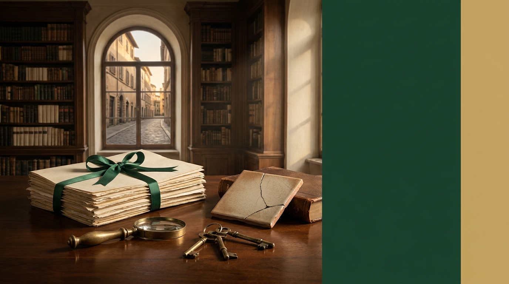

Vizi dell'immobile e risoluzione: cosa rimborsa davvero il venditore
La Corte di Cassazione torna sui vizi dell'immobile compravenduto e fissa un limite preciso: risolto il contratto, il venditore restituisce il prezzo e i costi direttamente legati alla vendita, ma non gli interessi passivi del mutuo né le spese di cancellazione ipotecaria. Una distinzione che incide sul calcolo del danno e sulle aspettative dell'acquirente.

Il caso
Un acquirente scopre vizi nell'immobile che ha comprato e ottiene la risoluzione del contratto, cioè il suo scioglimento con effetto retroattivo. Chiede al venditore non solo la restituzione del prezzo, ma anche il rimborso degli interessi passivi pagati sul mutuo acceso per l'acquisto e delle spese sostenute per cancellare l'ipoteca iscritta sull'immobile.
La Corte di Cassazione ha respinto questa parte della domanda, tracciando una linea netta tra i costi che il venditore deve rimborsare e quelli che restano a carico dell'acquirente.
Inquadramento normativo
La materia è regolata dagli artt. 1490 e seguenti del Codice civile, che disciplinano la garanzia per i vizi della cosa venduta. Quando i vizi rendono l'immobile inidoneo all'uso o ne diminuiscono in modo apprezzabile il valore, il compratore può chiedere la risoluzione del contratto (azione redibitoria) oppure la riduzione del prezzo.
L'art. 1493 c.c. stabilisce gli effetti della risoluzione: il venditore deve restituire il prezzo e rimborsare le spese e i pagamenti legittimamente fatti per la vendita. L'art. 1494 c.c. aggiunge l'obbligo di risarcire il danno, salvo che il venditore provi di aver ignorato senza colpa i vizi.
Il punto critico è proprio il perimetro del rimborso. La Cassazione ha chiarito che le "spese fatte per la vendita" ex art. 1493 c.c. sono solo quelle in rapporto diretto e immediato con l'operazione di compravendita, ad esempio gli oneri notarili e fiscali dell'atto. Gli interessi passivi del mutuo e le spese di cancellazione dell'ipoteca derivano invece da una scelta autonoma di finanziamento dell'acquirente: non sono un effetto necessario del contratto di vendita, ma di un distinto rapporto con la banca.
Perché conta
La pronuncia segna una distinzione tra costi causalmente collegati alla vendita e costi collegati alla provvista finanziaria.
Il mutuo è un contratto a sé. L'acquirente avrebbe potuto pagare con risorse proprie, in contanti o con altre forme di finanziamento. Gli interessi rappresentano il prezzo del denaro preso a prestito, non una conseguenza del difetto dell'immobile. Per questo non rientrano automaticamente tra le voci rimborsabili in sede di risoluzione.
Lo stesso vale per la cancellazione dell'ipoteca: è un'operazione che attiene al rapporto tra acquirente e istituto di credito, non al sinallagma della compravendita.
Ciò non significa che queste voci siano sempre irrecuperabili. Possono in astratto rientrare nel risarcimento del danno ex art. 1494 c.c., ma solo a due condizioni: che il venditore sia in colpa per non aver dichiarato i vizi e che l'acquirente dimostri il nesso causale e la quantificazione precisa del pregiudizio subìto. È un onere probatorio più gravoso rispetto alla semplice restituzione.
Implicazioni pratiche
Per chi acquista un immobile, la lezione è che la risoluzione per vizi non garantisce di tornare nella posizione economica anteriore all'acquisto. Una parte rilevante dei costi accessori, in particolare quelli del finanziamento, può restare a carico del compratore.
Per chi vende, la pronuncia delimita l'esposizione economica: in assenza di colpa accertata e di prova del danno, l'obbligo si ferma alla restituzione del prezzo e dei costi strettamente legati all'atto.
Cosa fare in concreto
- Documentate i vizi tempestivamente. Fate accertare i difetti con perizia tecnica e denunciateli al venditore nei termini di legge, per non decadere dalla garanzia.
- Distinguete le voci di danno. Separate i costi rimborsabili per restituzione (prezzo, oneri dell'atto) da quelli azionabili solo come risarcimento (interessi, spese di cancellazione), perché seguono regole probatorie diverse.
- Raccogliete la prova della colpa del venditore. Per recuperare gli interessi del mutuo serve dimostrare che il venditore conosceva o doveva conoscere i vizi e li ha taciuti.
- Valutate l'alternativa della riduzione del prezzo. In alcuni casi conviene chiedere la riduzione anziché la risoluzione, conservando l'immobile e abbattendo l'esborso complessivo.
- Inserite clausole chiare in fase di trattativa. Consigliamo di disciplinare per iscritto, già nel preliminare, la sorte dei costi accessori in caso di sopravvenuti vizi.
La valutazione resta caso per caso e dipende dalla documentazione disponibile e dalla condotta delle parti.
---
*Contributo informativo a cura di Tamburro & Partners - Avv. Giuseppe Tamburro. Non costituisce parere legale.*
Ogni contratto ha il suo equilibrio.
Se vuoi una revisione delle clausole o una redazione su misura, scrivi allo studio. Ti rispondiamo entro un giorno lavorativo.